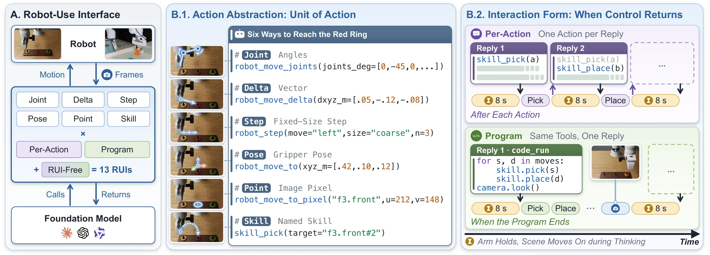
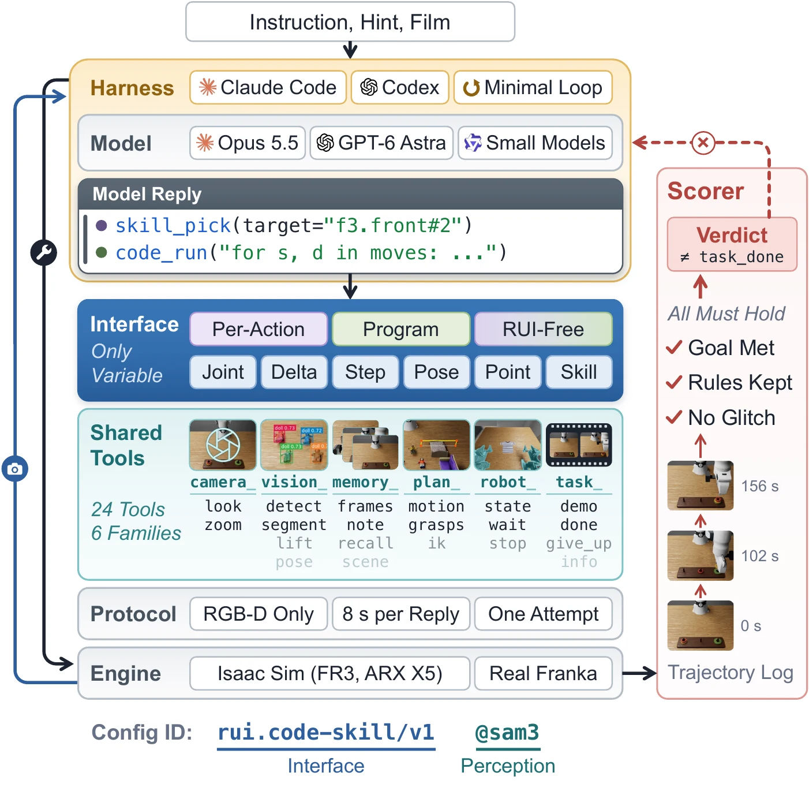

Finding 1
45.3→80.7%
Embodied performance depends on both the agent and its interface
The RUI alone moves Claude Code from 45.3% to 80.7%, far more than the 2.1 points between agents.
Interface effects →What Makes a Good Robot-Use Interface?
Show Lab, National University of Singapore
*Equal contribution·†Corresponding author
Only the interface changes, and a frontier agent's success shifts from 45% to 81%.

An RUI is the actions an agent can command and how they are organized: action abstraction, what it commands, crossed with interaction form, when control returns.
Action abstractionwhat the agent commands
Interaction formwhen control returns
Jointone of the 12 fixed RUIs
+1RUI-Freeboth layers open: the agent chooses, reply by reply
Beyond pick-and-place: agents must reason, acquire information through interaction, and adapt to changing physical conditions.
Each card plays the scripted reference; switch to Claude Code or Codex to see an agent.
Both agents drive a Franka Research 3 through all 13 RUIs, on one task per suite. Pick a task, then any of its 26 runs.
For a given agent and task, only the RUI varies; the harness, tools, evaluation protocol and simulator stay fixed.

Harness, 24 tools, protocol and backend stay fixed.
RGB-D cameras and robot state only.
The world moves on during each 8 s reply.
The verdict is withheld; the agent decides when it is done.
A real Franka runs all 13 RUIs unchanged.
The RUI alone moves Claude Code from 45.3% to 80.7%, far more than the 2.1 points between agents.
Interface effects →Action composition reduces decision burden, and in-program feedback adds further gains.
Decision compression →Claude Code's programs lead per-action by 23.3 points in simulation but trail on the real robot.
Sim to real →Most failed episodes still end in a completion claim.
Verification gap →Finding 1
Changing only the RUI shifts Claude Code from 45.3% to 80.7%: interface affordances matter only when agents can effectively use them.
Average success of each of the 13 RUIs; the line marks each agent's mean
The RUI moves Claude Code by 35.4 points, far more than the 2.1-point gap between agents: the same interface does not benefit every agent equally.
Pose and Skill are the two best per-action RUIs for all three agents, even though Pose scores 0.0% zero-shot.
Success (%) per suite and on average over the 30 tasks, five test missions each (Table 3)
RUI-Free reaches 80.7% for Codex, above every fixed RUI.
Fine-tuning lifts Qwen3.5-4B from 1.9% to 27.3%, most with abstractions that name a target (Pose, Point, Skill): a good RUI is also easy to learn.
Success (%) over 30 tasks × 5 test missions per RUI
Successful test episodes of the fine-tuned Qwen3.5-4B (2× speed).
Finding 2
Per-action control fragments a plan into many model decisions (execution fragmentation). Composing actions removes decisions; feedback inside programs adds further gains.
Claude Code on Delta, Step and Point; 90 episodes each
Action sequences cut median turns from 29 to 16.5; in-program feedback adds 10 points.
Claude Code on Delta, Step and Point; median turns, mean API cost per episode
What matters is where feedback can influence the next action, not how long execution runs.
Finding 3
Interface advantages in simulation do not necessarily transfer: under physical uncertainty, feedback and local correction matter. 650 real-robot episodes, judged by a human operator.
Success (%) on five matched tasks (Sim: one seed; Real: 650 episodes); abstractions average both forms
Delta leads for both agents on the real robot; RUI-Free drops from 100.0% to 44.0%.
Claude Code on Domino Run (WK3): Program-Delta succeeds in simulation but fails on the real robot; Delta succeeds in both.
Finding 4
Most failed episodes still end in a completion claim, illusory completion, though the failure is often visible in frames the agent already received.
of Claude Code's failed episodes end in a completion claim.
A fresh judge recognizes 70.2% and 80.9% of these false claims from those frames.
Post-condition checks agree with 88.6% of human labels.
Reporting or retrying failed actions lowers false claims but does not raise success.
@article{chen2026ruibench,
title={Ruibench: What makes a good robot-use interface?},
author={Chen, Yanzhe and Cao, Zhijun and Bai, Zechen and Zeng, Wenzheng and Ma, Kevin Yuchen and Lin, Yiqi and Liang, Guoqiang and Liu, Xiaokang and Sun, Ke and Lin, Kevin Qinghong and Shou, Mike Zheng},
journal={arXiv preprint arXiv:},
year={2026}
}